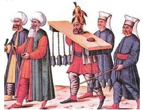

Osmanlı tarihindeki en meşhur ve en korkunç cellâtlardan biri Kara Ali’dir. Sultan İbrahim’in de cellâdı olan Kara Ali tarihe ‘padişah cellâdı’ olarak geçmişti. Evliya Çelebi Kara Ali ve yamaklarının giyimlerinden, sürekli üstlerinde taşıdıkları idam ve işkence aletlerinden söz ettiği bir betimlemesini şu cümleyle tamamlar: “Amma ne’uzü-billah hiç birinin çehresinde nur kalmamış, zehir gibi âdemlerdir.”
Cellât Kara Ali, Sultan İbrahim’den önce sadrazamı Hezarpâre Ahmet Paşa’yı boğmuştu. Sadrazam Sofu Mehmet Paşa’nın emriyle Sultan İbrahim’i boğmak üzere, hapsedildiği küçücük hücresine gitmek zorunda kalan Cellât Kara Ali, padişahın haykırışlarına dayanamayarak kaçmıştı. Cellât Kara Ali’den daha gaddar olan Sadrazam Sofu Mehmet Paşa, cellât ve yamaklarını yaptığı baskıyla Sultan İbrahim’in hücresine zorla sokmuştu. Kara Ali yamaklarının da yardımıyla gözyaşları içinde infazı gerçekleştirmiş, Sultan İbrahim’i boğarak öldürmüştü. 1664’te ölen fakat ölüm sebebi bilinmeyen Kara Ali’nin yattığı yerin Karyağdı bayırındaki cellât mezarlığı olduğu tahmin edilmektedir.

İdama götürülen bir mahkûm